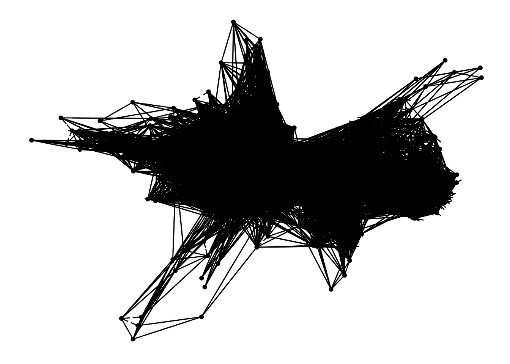
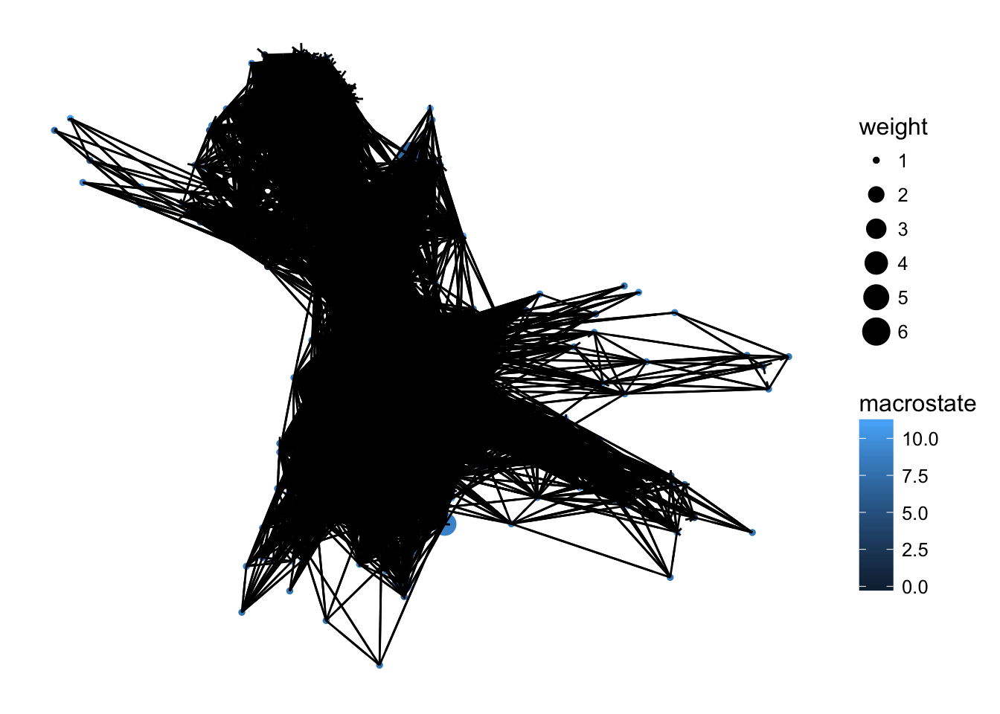

Heatmap and Network for graph-like data
Load packages, set up working environment.
If the packages cannot be found, please install first using install.packages() command.
library(ggnetwork)
library(sna)
library(reshape2)
library(ggplot2)- The “ggnetwork”" package provides a way to build network plots with ggplot2.
- The “sna” package contains a range of tools for social network analysis, including node and graph-level indices, structural distance and covariance methods, structural equivalence detection, network regression, random graph generation, and 2D/3D network visualization.
Import data
protein_transition <- read.table(url('https://raw.githubusercontent.com/MingChen0919/gst-colloquium-workshop-2018/master/content/datasets/John_datasets/protein_folder/transitionmatrix.microstates.dat'))Now, take a look at the data we just imported. Click Environment on the right board, and then click the transistion. If you are command line geek, you can also type View(protein_transition) in console.
Plotting heatmap
First, I will help you to do some data transformation and reshaping.
# Change data into a matrix with same row names and column names.
row.names(protein_transition) <- colnames(protein_transition)
transition_mat <- as.matrix(protein_transition)
melt_mat <- melt(transition_mat)Now, use ggplot2 to make a heatmap using the ‘melt_mat’ data.
ggplot(data = melt_mat) +
geom_tile(mapping = aes(x=Var1, y=Var2, fill=value)) +
scale_fill_gradient(name= "transition") +
theme_void()
#ggsave("protein_heatmap.png")Think about how you can make the heatmap look better?
- using log values
- change scale colors
- anything else?
Practice: try to make your heatmap looks better. (5 min)
Simple network
We can also use the transition data to make network plots. First, an example of a messy network figure using only transition data values. (You don’t have to try this)
n = network(protein_transition)
n1 = ggnetwork(n)
n1$x = n1$x[, 1]
n1$y = n1$y[, 1]
n1$xend = n1$xend[, 1]
n1$yend = n1$yend[, 1]
ggplot(n1, aes(x = x, y = y, xend = xend, yend = yend)) +
geom_nodes() +
geom_edges() +
theme_blank()
Informative network
Add attributes to vertices
Assign an weight levels to each vertex.
Assign macrostate groups to vertex.
Visualize transition, macrostate and weight information in one figure.
macrostate = read.table(url('https://raw.githubusercontent.com/MingChen0919/gst-colloquium-workshop-2018/master/content/datasets/John_datasets/protein_folder/macrostate.map.dat'))
distribution = read.table(url('https://raw.githubusercontent.com/MingChen0919/gst-colloquium-workshop-2018/master/content/datasets/John_datasets/protein_folder/stationarydistribution.microstates.dat'))
distribution$weight <- as.numeric(cut(distribution$V1, 6))
n %v% "weight" = distribution[,2]
n %v% "macrostate" = macrostate[,1]
n2 = ggnetwork(n)
n2$x = n2$x[, 1]
n2$y = n2$y[, 1]
n2$xend = n2$xend[, 1]
n2$yend = n2$yend[, 1]
ggplot(n2, mapping = aes(x = x, y = y, xend = xend, yend = yend)) +
geom_nodes(mapping = aes(color = macrostate, size = weight)) +
geom_edges() +
theme_blank()
Modify the basic network
To change the transprancy of edges.
ggplot(n2, mapping = aes(x = x, y = y, xend = xend, yend = yend)) +
geom_nodes(mapping = aes(color = macrostate, size = weight)) +
geom_edges(alpha = 0.01) +
theme_blank()
#ggsave("network.png")A macrostate network
Instead of using the microstate transition, we process it into macrostates and using the new macrostate transition and distrubution.
macro_transition <- read.table(url("https://raw.githubusercontent.com/MingChen0919/gst-colloquium-workshop-2018/master/content/datasets/John_datasets/protein_folder/transitionmatrix.macrostates.dat"))
macro_distrubution <- read.table(url("https://raw.githubusercontent.com/MingChen0919/gst-colloquium-workshop-2018/master/content/datasets/John_datasets/protein_folder/stationarydistribution.macrostates.dat"))
n= network(macro_transition)
n %v% "weight" = macro_distrubution[,1]
n2 = ggnetwork(n)
n2$x = n2$x[, 1]
n2$y = n2$y[, 1]
n2$xend = n2$xend[, 1]
n2$yend = n2$yend[, 1]
n2$macrostat = gsub("V","",n2$vertex.names)
n2$macrostat = as.numeric(n2$macrostat)
ggplot(n2, mapping = aes(x = x, y = y, xend = xend, yend = yend)) +
geom_nodes(mapping = aes(size = macrostat, color=vertex.names)) +
geom_edges(alpha = 0.3) +
theme_blank() 
Excercise (5 min)
- change curvature in the geom_edges()
- change the line width cooresponding to the weight. (Hint: add mapping = aes(size = weight) in the geom_edges())
- now run ggplot again and see what changes!
Add labels to nodes (Optional)
We will not include this part in our workshop, please try it yourself if you are interested in and would like to use this type of plot in your research.
ggplot(n2, mapping = aes(x = x, y = y, xend = xend, yend = yend)) +
geom_edges(alpha = 0.3) +
geom_nodelabel(aes(label = vertex.names, color = as.factor(weight)),
cex = 2,
fontface = "bold") +
scale_color_manual(name = "Weight", values = colorRampPalette(c("yellow", "red"))(12)) +
theme_blank()